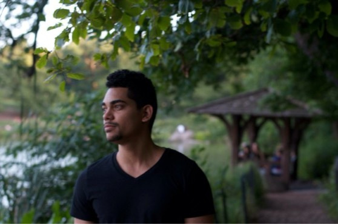

I am a self taught developer and who loves everything related to techonology & design. Right now I am digging into the deep ends of JavaScript. My main focus is to be involved in projects that I can be proud of, join a great team and advance my development carreer. I truly enjoy building web things and each day my passion for writing code grows. Seeing products go from concepts to live on the web is amazing!
HTML, CSS, JavaScript, Bootstrap, Sass, Gulp, Git, Webpack, Wordpress, Sketch.
Front End is all about building beautiful interfaces which will allow users to easily interact with websites and applications.
During this phase, we explore ideas for the site structure and content. Then design different levels of fidelity mock-ups to create a close to perfect layout that aligns with our goals and targetted clients.